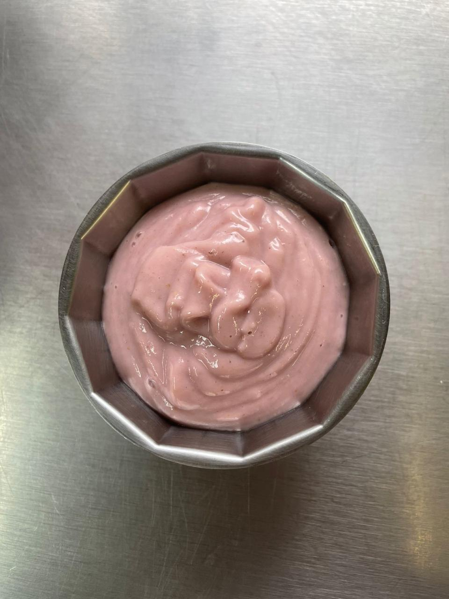

- 300g de couve-flor;
- 200g de morango limpo e picado;
- 120g de leite em pó integral;
- Caso necessário, adicione 60 gramas de açúcar refinado.
Modo de preparo: Higienize e retire as aparas do couve-flor; Higienize os morangos e corte em pedaços menores; Coloque o couve-flor para cozinhar em fogo médio, por 25 minutos; Após o cozimento do couve flor despreze toda a água do cozimento; Descartar a água do cozimento auxilia na perda do potássio no alimento.
Reserve o couve-flor e espere até que a temperatura diminua; Adicione os morangos e a couve no liquidificador e bata em velocidade média até que virem uma mistura homogênea; Desligue o liquidificador e adicione o leite em pó e bata novamente a mistura; Adicione a mistura a um recipiente e leve a geladeira, deixe por no mínimo 4 horas e sirva.
Voltar